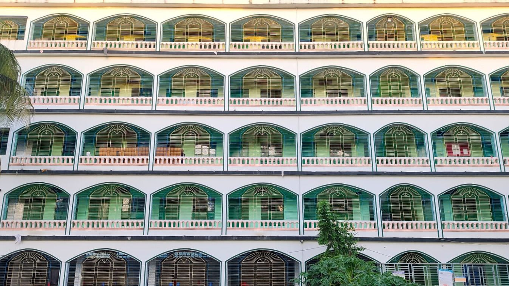

হোম › প্রতিষ্ঠান পরিচিতি
প্রতিষ্ঠান পরিচিতি

আলহামদুলিল্লাহ। কুরআনের হাফেজ হওয়া একজন শিশুর জন্য দুনিয়া ও আখিরাতের সবচেয়ে বড় সম্মান। আমরা চাই, আমাদের প্রতিটি শিক্ষার্থী বিশুদ্ধ তিলাওয়াত ও মজবুত হিফজের পাশাপাশি সময়ের জ্ঞান-বিজ্ঞানেও দক্ষ হয়ে উঠুক, যাতে সে দ্বীনের সঠিক প্রতিনিধি হয়ে সমাজ ও উম্মাহর সেবা করতে পারে।
সে লক্ষ্যে আমরা নিজস্ব পাঠ্যবই, প্রশিক্ষিত শিক্ষক, শারীরিক শাস্তিমুক্ত আনন্দময় পরিবেশ এবং অভিভাবকের সাথে নিয়মিত যোগাযোগের ব্যবস্থা করেছি। আল্লাহ তাআলা আমাদের এই প্রচেষ্টা কবুল করুন।
— মাওলানা আবু ওছমান, মুহতামিম, খাগড়াছড়ি বায়তুশ শরফ জব্বারিয়া ইন্টারন্যাশনাল হিফজ একাডেমি
প্রাতিষ্ঠানিক পরিচিতি
খাগড়াছড়ি বায়তুশ শরফ জব্বারিয়া ইন্টারন্যাশনাল হিফজ একাডেমি — হিফজুল কুরআন, কওমি-আলিয়া ও আধুনিক প্রযুক্তির অনন্য সমন্বয় — প্রথম শ্রেণি থেকে দাওরায়ে হাদিস।
ঠিকানা: খাগড়াছড়ি বায়তুশ শরফ কমপ্লেক্স, বায়তুশ শরফ সড়ক, আরামবাগ, সদর, খাগড়াছড়ি।
প্রাতিষ্ঠানিক ভিশন (Vision)
এমন একটি আদর্শ ও আলোকিত প্রজন্ম গড়ে তোলা—যারা বিশুদ্ধভাবে কুরআনে কারীমের হাফেজ, দ্বীনি জ্ঞানে সুগভীর মুহাক্কিক আলেম, আধুনিক বিজ্ঞান-প্রযুক্তি ও রোবোটিক্সে পারদর্শী, বহুভাষিক দক্ষতাসম্পন্ন (বাংলা, আরবি ও ইংরেজি) এবং উত্তম চরিত্র ও নেতৃত্বের গুণে আদর্শ মানুষ হিসেবে গড়ে উঠবে এবং বিশ্বমঞ্চে ইসলামের প্রতিনিধিত্ব করতে সক্ষম—ইনশাআল্লাহ।
প্রাতিষ্ঠানিক মিশন (Mission)
- প্রথম শ্রেণি থেকেই বিজ্ঞানসম্মত তাহফিজ পদ্ধতিতে বিশুদ্ধ কুরআন তিলাওয়াত ও তাজবীদের মজবুত ভিত্তি গঠন।
- সহীহ আকীদা, মাসনুন দোয়া ও সুন্নাহভিত্তিক দৈনন্দিন জীবনাচরণ এবং চারিত্রিক তারবিয়াহ নিশ্চিত করা।
- কওমি ধারার 'মাদানি নেসাব' ও ঐতিহ্যবাহী দরসে নিজামীর সাথে আলিয়া ধারার বোর্ড পরীক্ষার (দাখিল ও আলিম) প্রাতিষ্ঠানিক সমন্বয়।
- প্রথম শ্রেণি থেকেই আরবি ও ইংরেজি ভাষার চারটি মূল দক্ষতা—শ্রবণ (Listening), কথন (Speaking), পঠন (Reading), লিখন (Writing)—বাস্তবায়ন করা।
- রোবোটিক্স, আইসিটি ও স্টেম (STEM) শিক্ষাকে কারিকুলামের অবিচ্ছেদ্য অংশ হিসেবে যুক্ত করে গবেষণাধর্মী মনন তৈরি করা।
- শিশু মনস্তত্ত্বের আলোকে একটি আনন্দময়, ভীতিহীন, বহু-ইন্দ্রিয় (Multi-sensory) ও ফলাফলভিত্তিক (Outcome-Based Education - OBE) শিক্ষণ পরিবেশ প্রতিষ্ঠা করা।
সামগ্রিক প্রাতিষ্ঠানিক কাঠামো ও ৩টি প্রধান বিভাগ
তিন বিভাগের তুলনামূলক রূপরেখা
| মূল বিবেচ্য বিষয় | জেনারেল হিফজ বিভাগ (General Hifz) | একাডেমিক হিফজ বিভাগ (Academic Hifz) | কিতাব বিভাগ (Kitab Division) |
|---|---|---|---|
| মূল লক্ষ্য ও দর্শন | দ্রুততম সময়ে মানসম্মত হিফজুল কুরআন + ষষ্ঠ শ্রেণি সমমান সাধারণ শিক্ষা | হিফজুল কুরআন + জাতীয় কারিকুলাম + আরবি/ইংরেজি ৪ দক্ষতা + প্রযুক্তি | মাদানি নেসাব + কওমি-আলিয়া সমন্বয় + আরবি/ইংরেজি ৪ দক্ষতা + প্রযুক্তি |
| শিক্ষার্থীর ধরন | যারা হিফজের পাশাপাশি বাংলা, ইংরেজি, গণিত, আরবি মুকালামা ও ইংরেজি স্পোকান ও প্রযুক্তিতে সমান দক্ষ হতে চায় | যারা হিফজের পাশাপাশি বাংলা, ইংরেজি, গণিত, আরবি মুকালামা ও ইংরেজি স্পোকান ও প্রযুক্তিতে সমান দক্ষ হতে চায় | হিফজ সমাপ্তকারী অথবা সরাসরি দ্বীনি শিক্ষায় আগ্রহী শিক্ষার্থী |
| ভর্তির বয়স | ৬ বছর | ৬–৭ বছর | ১২ বছর (বা হিফজ সমাপনান্তে) |
| ভর্তি যোগ্যতা | মৌলিক সাক্ষরতা ও প্রস্তুতি | মৌলিক সাক্ষরতা ও ভাষা প্রস্তুতি | কুরআন মাজিদ শুদ্ধ পঠন ও ৫ম শ্রেণি সমমান যোগ্যতা |
| মেয়াদ ও শ্রেণি | ৬ বছর (১ম শ্রেণি থেকে ৬ষ্ঠ শ্রেণি/দাওর) | ৬ বছর (১ম শ্রেণি থেকে ৬ষ্ঠ শ্রেণি/দাওর) | ৭ বছর (১ম বর্ষ থেকে ৭ম বর্ষ/দাওরায়ে হাদিস) |
| হিফজ অগ্রগতি | কায়েদা → আমপারা → হিফজ → দাওর → মুতাশাবিহাত ও ক্বেরাত | কায়েদা → আমপারা → হিফজ → দাওর (সুষম সময়ে) | হাফেজদের জন্য নিয়মিত দাওর/রিভিশন; অন্যদের জন্য নির্বাচিত সূরা |
| একাডেমিক অগ্রগতি | বাংলা, ইংরেজি ও গণিত, আরবি মুকালামা, স্পোকান ইংলিশ, প্রযুক্তি | বাংলা, ইংরেজি ও গণিত, আরবি মুকালামা, স্পোকান ইংলিশ, প্রযুক্তি | মাদানি নেসাব কিতাবসমূহ + দাখিল ও আলিম বোর্ড সিলেবাস + উচ্চতর আরবি |
| ভবিষ্যৎ গতিপথ | কিতাব বিভাগ (বিজ্ঞান শাখা / মানবিক শাখা) | কিতাব বিভাগ (বিজ্ঞান শাখা / মানবিক শাখা) | দেশ-বিদেশের বিভিন্ন বিশ্ববিদ্যালয়ে অনার্স / ফাজিল / উচ্চশিক্ষা ও ইফতা |
এক নজরে হিফজ একাডেমি
| জেনারেল হিফজ - قسم الحفظ العام | একাডেমিক হিফজ - قسم الحفظ الأكاديمي | কিতাব বিভাগ - قسم الكتاب |
|---|---|---|
| নাজেরা ১ম বর্ষالسنة الأولى للناظرة (الصف الأول) | নাজেরা ১ম বর্ষ (১ম শ্রেণি)السنة الأولى للناظرة (الصف الأول) | ১ম বর্ষ (৬ষ্ঠ শ্রেণি)السنة الأولى (الصف السادس) |
| নাজেরা ২য় বর্ষ (২য় শ্রেণি)السنة الثانية للناظرة (الصف الثاني) | নাজেরা ২য় বর্ষ (২য় শ্রেণি)السنة الثانية للناظرة (الصف الثاني) | ২য় বর্ষ (৭ম শ্রেণি)السنة الثانية (الصف السابع) |
| হিফজ ১ম বর্ষ (৩য় শ্রেণি)السنة الأولى للحفظ (الصف الثالث) | হিফজ ১ম বর্ষ (৩য় শ্রেণি)السنة الأولى للحفظ (الصف الثالث) | ৩য় বর্ষ (৮ম শ্রেণি)السنة الثالثة (الصف الثامن) |
| হিফজ ২য় বর্ষ (৪র্থ শ্রেণি)السنة الثانية للحفظ (الصف الرابع) | হিফজ ২য় বর্ষ (৪র্থ শ্রেণি)السنة الثانية للحفظ (الصف الرابع) | ৪র্থ বর্ষ (৯ম শ্রেণি)السنة الرابعة (الصف التاسع) |
| হিফজ ৩য় বর্ষ (৫ম শ্রেণি)السنة الثالثة للحفظ (الصف الخامس) | হিফজ ৩য় বর্ষ (৫ম শ্রেণি)السنة الثالثة للحفظ (الصف الخامس) | ৫ম বর্ষ (১০ম শ্রেণি) দাখিল পরিক্ষাالسنة الخامسة (الصف العاشر) |
| দাওর বর্ষ (৬ষ্ঠ শ্রেণি)سنة الدورة (الصف السادس) | দাওর বর্ষ (৬ষ্ঠ শ্রেণি)سنة الدورة (الصف السادس) | ৬ষ্ঠ বর্ষ (আলিম ১ম)السنة السادس (المرحلة العالية الأولى والثانية) |
| ৭ম বর্ষ (দাওরায়ে হাদিস) ও (আলিম ২য়)السنة السابعة (دورة الحديث الشريف) | ||
| আলিম পরিক্ষা |
প্রাতিষ্ঠানিক সুযোগ-সুবিধা
শিক্ষার্থীদের সুবিধাসমূহ

প্লে জোন
শিশুদের মানসিক বিকাশ, বিনোদন ও শারীরিক উদ্দীপনা বজায় রাখার জন্য রয়েছে নিরাপদ ও আধুনিক ইনডোর/আউটডোর প্লে জোন।
গাড়ি (পরিবহন ব্যবস্থা)
শিক্ষার্থীদের নিরাপদে যাতায়াতের জন্য সুব্যবস্থিত ও সার্বক্ষণিক পর্যবেক্ষণাধীন নিজস্ব পরিবহন সুবিধা।
এসি ক্লাসরুম
পড়াশোনার মানসম্মত ও আরামদায়ক পরিবেশ নিশ্চিত করতে সম্পূর্ণ শীতাতপ নিয়ন্ত্রিত শ্রেণিকক্ষ।
আয়া ও পরিচ্ছন্নতা কর্মী
ছোট শিক্ষার্থীদের সার্বক্ষণিক যত্ন, ব্যক্তিগত পরিচর্যা ও সুস্থ পরিবেশ বজায় রাখার জন্য নিবেদিতপ্রাণ আয়া।
দারোয়ান (নিরাপত্তা প্রহরী)
প্রতিষ্ঠান ও শিক্ষার্থীদের নিশ্ছিদ্র নিরাপত্তা নিশ্চিতকরণে ২৪ ঘণ্টা সতর্ক নিরাপত্তা প্রহরী।
সকাল ও বিকেলের নাস্তা
শিক্ষার্থীদের স্বাস্থ্য ও পুষ্টির কথা বিবেচনায় রেখে প্রতিদিন পরিবেশন করা হয় স্বাস্থ্যসম্মত ও মানসম্মত তাজা নাস্তা।
স্মার্ট বোর্ড
ডিজিটাল ও আধুনিক শিখন পদ্ধতির অংশ হিসেবে ইন্টারেক্টিভ স্মার্ট বোর্ডের মাধ্যমে ক্লাস পরিচালনা।
স্টুডিও
শিক্ষার্থীদের তিলাওয়াত, উপস্থাপনা ও সাংস্কৃতিক প্রতিভা বিকাশ ও ধারণ করার জন্য সুসজ্জিত ডিজিটাল স্টুডিও সুবিধা।
যা আমাদের অনন্য করেছে
প্রথম শ্রেণি থেকে দাওরায়ে হাদিস
জেনারেল হিফজ, একাডেমিক হিফজ ও কিতাব বিভাগ — এক ক্যাম্পাসে ধারাবাহিক পথ।
কওমি-আলিয়া সমন্বয়
মাদানি নেসাব ও দরসে নিজামীর সাথে দাখিল ও আলিম বোর্ড পরীক্ষা (মানবিক ও বিজ্ঞান বিভাগ)।
আরবি ও ইংরেজির ৪ দক্ষতা
লিসানুল কুরআন ও Spoken English for Huffaz — শ্রবণ, কথন, পঠন ও লিখন, প্রথম শ্রেণি থেকেই।
রোবোটিক্স ও STEM
তাসখীর ১–৬ এবং কিতাব বিভাগে বিল্ড ও ইনোভেট উইথ রোবোটিক্স — প্রতি বছর বর্ষশেষ প্রকল্প।
নিজস্ব পাঠ্যবই
«আমার প্রথম পাঠ» থেকে «আমার ষষ্ঠ পাঠ», শব্দার্থ সংকলন, ডায়েরি ও শিক্ষক সহায়িকা — ৩২টি বই।
শারীরিক শাস্তি নিষিদ্ধ
শারীরিক বা মানসিক নির্যাতন সম্পূর্ণ নিষিদ্ধ; আনন্দময়, ভীতিহীন ও বহু-ইন্দ্রিয় শিক্ষণ পরিবেশ।
প্রশিক্ষিত উস্তাদ
শিক্ষাবর্ষ শুরুর আগে ১৫ দিনের পেডাগজি, চাইল্ড সাইকোলজি ও স্মার্ট ক্লাসরুম বুটক্যাম্প বাধ্যতামূলক।
ফলাফলভিত্তিক মূল্যায়ন
প্রতিদিন সবক, প্রতি বৃহস্পতিবার সবিনা, মাসিক জুয টেস্ট, জুনে অর্ধবার্ষিক ও ডিসেম্বরে বার্ষিক মূল্যায়ন।
অভিভাবকের জন্য
- সন্তানের অনুপস্থিতি বা দুর্বলতা হলে একাডেমি থেকে হোয়াটসঅ্যাপে বার্তা যাবে।
- প্রতি সপ্তাহে শিক্ষার্থী ডায়েরিতে স্বাক্ষর করবেন।
- প্রতি মাসে এক পাতার অগ্রগতি সারাংশ শিট পাবেন; এই শিটে মাসিক হিফজ ছকে স্বাক্ষর করবেন।
- অভিভাবক সভা: এপ্রিল, জুন (অর্ধবার্ষিক), অক্টোবর ও ডিসেম্বর (বার্ষিক); জুন ও ডিসেম্বরে শিক্ষার্থীদের উপস্থাপনা।
- ছুটিতে প্রতিদিন আমুখতা শুনে “ছুটির আমুখতা কার্ড”-এ স্বাক্ষর করবেন।
কৌশলগত পথরেখা ২০২৬–২০৪৫
| পর্যায় | সময়কাল | মূল লক্ষ্য | প্রত্যাশিত ফলাফল |
|---|---|---|---|
| ভিত্তি | জুন–ডিসেম্বর ২০২৬ | অবকাঠামো, ল্যাব, শিক্ষক নিয়োগ ও প্রশিক্ষণ, নিজস্ব পাঠ্যবই মুদ্রণ | ২০২৭ শিক্ষাবর্ষের সূচনা |
| স্বল্পমেয়াদি | ২০২৭–২০৩০ | ১ম–৪র্থ শ্রেণির হিফজ ও প্রাথমিক কিতাব শাখার পূর্ণ বাস্তবায়ন, আন্তর্জাতিক মানের ভাষা ল্যাব | হিফজ ও ভাষা দক্ষতায় মডেল প্রতিষ্ঠান |
| মধ্যমেয়াদি | ২০৩০–২০৩৫ | দাখিল ও কওমি বোর্ডের কেন্দ্রীয় পরীক্ষা, পূর্ণাঙ্গ রোবোটিক্স ও সায়েন্স ল্যাব | বোর্ড পরীক্ষায় মেধার স্বাক্ষর |
| দীর্ঘমেয়াদি | ২০৩৫–২০৪৫ | দাওরায়ে হাদিস, ইফতা, উচ্চতর ইসলামিক গবেষণা কেন্দ্র ও আন্তর্জাতিক স্কলারশিপ | মুহাক্কিক আলেম ও আন্তর্জাতিক মানের স্কলার |